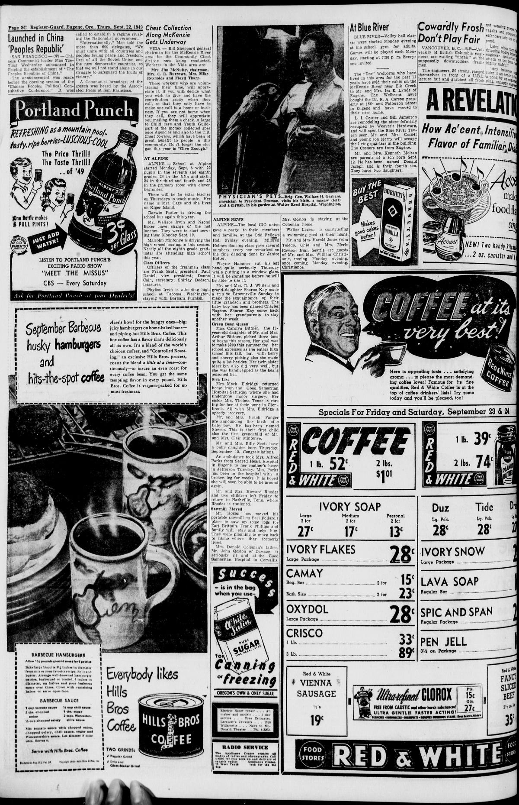

HN-576: Proclamation of People's Republic reaches U.S. newspapers
HN-576 · October 1, 1949 · Politics, Government & Diplomacy > Presidents, Monarchs & Leadership Changes > Transfers of power

page scanRecorded finding
Discovery narrative
Source: Indianapolis Times, p. 2 — original page; U.S. State Department, Chinese Revolution of 1949.
Report: “'People's Republic' Proclaimed in China as Thousands Cheer” described Mao Zedong's declaration in Beijing, a new central government, and a mass rally.
Assessment: The PRC was proclaimed October 1. This did not make the civil war's military and political consequences instantly disappear: the Republic of China government continued on Taiwan. A declaration and complete consolidation of rule are different historical events.
Original archive images (3)
Authentic images retrieved from Historic Oregon Newspapers (University of Oregon) and Hoosier State Chronicles (Indiana State Library). Article crops are located using the archive's own OCR word coordinates and rendered at native crop resolution; article clips are assembled from the archive's own article-block images; page images marked "archive tiles" are stitched from the archive's own tiled page service at its 256-px tile cap; page images marked "issue PDF" are single pages rasterised from the archive's own issue PDF, with the page chosen by matching the headline against the PDF's text layer; page scans are reduced-size access renditions. No images were generated, mocked, or retouched.

Historic Oregon Newspapers (University of Oregon)
Open larger view · Archive viewer (full resolution)

Hoosier State Chronicles (Indiana State Library)
Open larger view · Archive viewer (full resolution)

Historic Oregon Newspapers (University of Oregon)
Open larger view · Archive viewer (full resolution)
Source acquisition
Status: Archive images acquired
Authentic archive-owned image renditions were retrieved for this record and are displayed above. The source-acquisition manifest preserves the original pre-acquisition feasibility assessment.
Original seed
URL (preserved verbatim): https://newspapers.library.in.gov/?a=d&d=IPT19491001.1.2
Saved research report: Historical_Newspaper_Event_Research_553-577_2026-10-23.md
Evidence note: A newspaper report means a historical publication made a claim; it does not establish that claim as fact. Contemporary reporting is separated from later scholarly context and our own assessment.